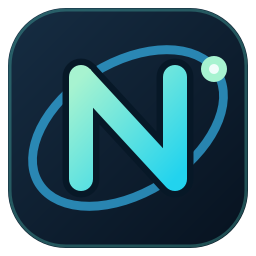

Nimvex
A lightweight Qt-based browser for Linux, designed for gaming, streaming, and straightforward everyday browsing.
Open mobile pageThe signed Fedora RPM repository and installation instructions will appear here after the repository publication step.